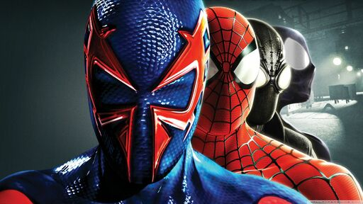
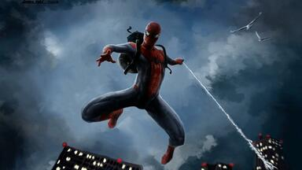

Spider-Man, comic-book character who was the original everyman superhero. In Spider-Man’s first story, in Marvel Comics’ Amazing Fantasy, no. 15 (1962), American teenager Peter Parker, a poor sickly orphan, is bitten by a radioactive spider. As a result of the bite, he gains superhuman strength, speed, and agility along with the ability to cling to walls. Writer Stan Lee and illustrator Steve Ditko created Spider-Man as a filler story for a canceled anthology series. At the time, a teenage lead hero was unheard of in comic books. However, young readers responded powerfully to Peter Parker, prompting an ongoing title and, ultimately, a media empire, including video games, several animated and one live-action television series, a live-action film franchise, and a Broadway musical.
Spider-Man was a radical departure from the established conventions of the comic-book superhero: he was a teenage character who was not relegated to sidekick status beside an older, more-experienced hero. In addition to enhanced speed and strength, Parker also possessed a precognitive “spider sense” that alerted him to approaching dangers. Using his inborn scientific talents, Parker synthesized a unique adhesive “web fluid” and built a pair of wrist-mounted web-shooters that enabled him to shape the webbing into various useful forms. He also designed and sewed the web-festooned red-and-blue costume that quickly became Spider-Man’s most visible trademark.
However, Marvel publisher Martin Goodman was not initially receptive to the idea of a teen hero taking centre stage, nor did he want to accept Spider-Man’s neuroses, romantic deficiencies, and chronic concerns about money. Goodman also thought that the audience would be repelled by the character’s spider motif. Fortunately, Lee’s instincts prevailed. Spider-Man’s debut in Amazing Fantasy was an immediate and resounding success. From the beginning, Spider-Man’s behaviour deviated significantly from the prevailing superheroic norms. Instead of selflessly dedicating his superhuman gifts to crime fighting or the general betterment of humankind, the newly empowered Spider-Man cashes in on his talents by becoming a television celebrity. After his first performance before the cameras, he refuses to stop a robber from stealing the television station’s studio box-office receipts. Spider-Man’s world abruptly collapses a few days later when a burglar murders his uncle, Ben Parker, leaving Peter’s Aunt May—now his only surviving guardian—a widow. The grief-stricken Spider-Man tracks down Uncle Ben’s killer, only to make the horrible discovery that the murderer is the very same robber he had allowed to escape from the television studio. Spider-Man’s origin story closes with a sombre narration that permanently sets the series’ moral tone:
As the 1970s continued, Spider-Man’s adventures expanded into a fourth ongoing comic series (a monthly intended for the mainstream Spidey audience) titled Peter Parker: The Spectacular Spider-Man (later shortened to The Spectacular Spider-Man), which debuted in December 1976 and ran for 263 issues. This title, along with ASM, would carry the Spider-Man franchise through the next two decades. One of the notable events of this era took place in ASM Annual no. 21 (1987), when Parker and Mary Jane Watson were married.Spider-Man, launched in August 1990, showcased the writing and illustrations of Todd McFarlane, whose eye-grabbing, rococo style drew unprecedented fan attention to the character. Particularly noteworthy were the detailed renderings of “Ditko-esque” poses and the ornately braided “spaghetti webbing” that flowed from Spidey’s web shooters. The first issue of Spider-Man also inaugurated Marvel’s soon-to-be-ubiquitous practice of releasing a single comic book with multiple covers, a marketing maneuver that arguably appealed more to collectors than to readers. Nevertheless, that issue set a benchmark for sales, pumping more than three million copies into direct-market comics shops and newsstand venues around the world.
The momentum that Spidey gained in the comics pages was also reflected in Hollywood. After resolving a host of legal issues that had previously prevented its production, Sony brought Spider-Man to the big screen in May 2002. Critics adored the film, and it eventually earned more than $800 million worldwide. Spider-Man 2 (2004) and Spider-Man 3 (2007) proved equally successful. Director Sam Raimi, who helmed the trilogy, bowed out after the third film.Spider-Man’s Broadway debut was somewhat less auspicious, as Spider-Man: Turn Off the Dark was plagued with problems. U2 members Bono and the Edge wrote the music and lyrics, and the original show was directed by Julie Taymor, who had overseen the spectacularly successful Broadway production of Disney’s The Lion King. Exasperated by the repeated postponements of the official opening, theatre critics reviewed the show anyway, and most panned it. Taymor was forced out, and playwright and Marvel comics writer Roberto Aguirre-Sacasa was brought in to collaborate on revisions to the script. The musical finally opened in June 2011; the critics’ reviews were still mostly negative, but the show, nevertheless, remained popular with audiences.The Spider-Man film series underwent a “reboot” for The Amazing Spider-Man (2012) and The Amazing Spider-Man 2 (2014). Marvel, which had been purchased by the Walt Disney Company in 2009, developed its own successful franchise of superhero films under the banner of the “Marvel Cinematic Universe,” but existing licensing agreements precluded the use of Spider-Man. That impasse was resolved in February 2015 with a unique deal between Disney and Sony that allowed the character to appear in films produced by either studio. Spider-Man made his Marvel Cinematic Universe debut in the third act of Captain America: Civil War (2016) as the protégé of Iron Man alter ego Tony Stark. Tom Holland’s scene-stealing turn as the webslinger breathed new life into a character who had been experiencing diminishing returns at the box office. In Spider-Man: Homecoming (2017) Holland led an impressive ensemble cast in a sly action comedy that traced the slow and often painful transformation of a Queens high-school student into a superhero. Holland returned to the screen as the teenaged webslinger in the blockbusters Avengers: Infinity War (2018), Avengers: Endgame (2019), Spider-Man: Far from Home (2019), and Spider-Man: No Way Home (2021). The animated Spider-Man: Into the Spider-Verse (2018) marked the silver screen debut of Miles Morales, and the film was greeted with nearly universal acclaim. Slick visuals, a compelling story, and an engaging hip-hop soundtrack won over audiences and critics, and the film won the Academy Award for best animated feature.